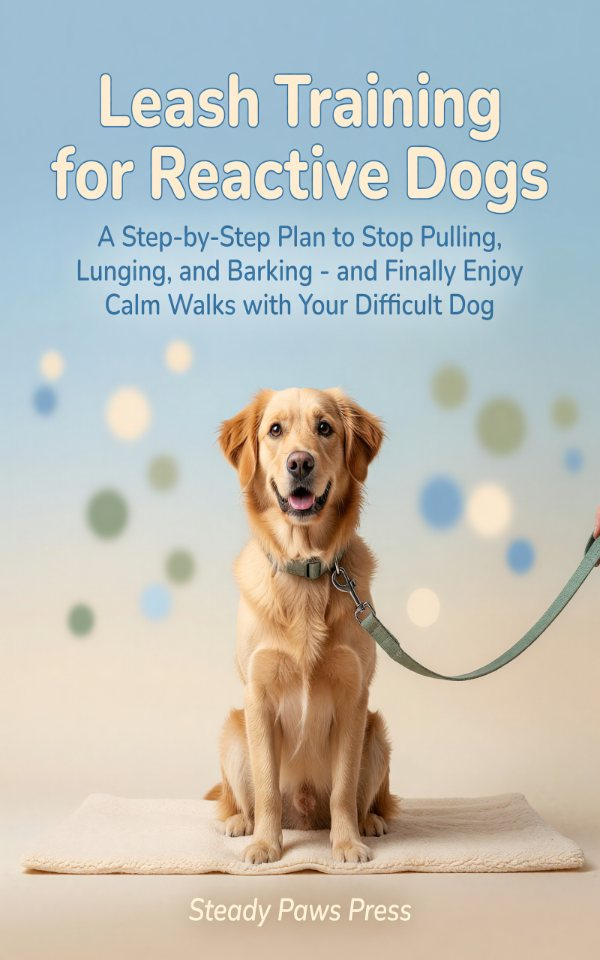

Walks shouldn't feel like a fight. This Leash Training for Reactive Dogs covers reactive dog training book, dog leash training, stop dog pulling on leash with step-by-step instructions for beginners and experienced readers alike. Written by Jordan Wells, published by Steady Paws Press. Available on Kindle for $6.99.
Walks shouldn't feel like a fight. If your dog barks, lunges, or drags you down the street the moment another dog appears, "just socialize them more" was never going to work. Reactivity isn't disobedience — it's a dog over their emotional threshold. This is the step-by-step plan for that dog: find your dog's trigger distance, build the five foundation behaviors at home, apply counterconditioning without the timing mistakes that quietly poison it, and work through an 8-week plan built on named, force-free methods.

Preview the book before you buy. Plus get launch-week discounts, free promos, and new-book alerts from The Skill Mill.
No spam. Unsubscribe with one click. Delivered by MailerLite, GDPR-compliant.
Practical, beginner-friendly content designed to take you from zero to confident.
Reactive dogs cannot learn while they are panicking. Chapter 3 shows you how to find the distance at which your dog can still think, and how to build every walk around staying inside it.
Two named, force-free methods with a chapter each — what they are, how to run them correctly, and the specific timing errors that make counterconditioning backfire instead of working.
A week-by-week structure that starts with five foundation behaviours at home, then rebuilds the daily walk. Includes what to do when it goes wrong, and clear signs that it is time to bring in a professional.
Preview the book before you buy. Plus get launch-week discounts, free promos, and new-book alerts from The Skill Mill.
No spam. Unsubscribe with one click. Delivered by MailerLite, GDPR-compliant.
As an Amazon Associate I earn from qualifying purchases. Certain content that appears on this site comes from Amazon. This content is provided "as is" and is subject to change or removal at any time.